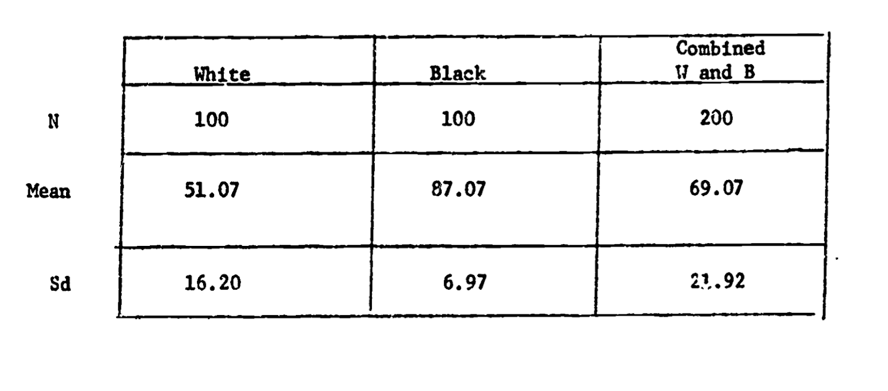
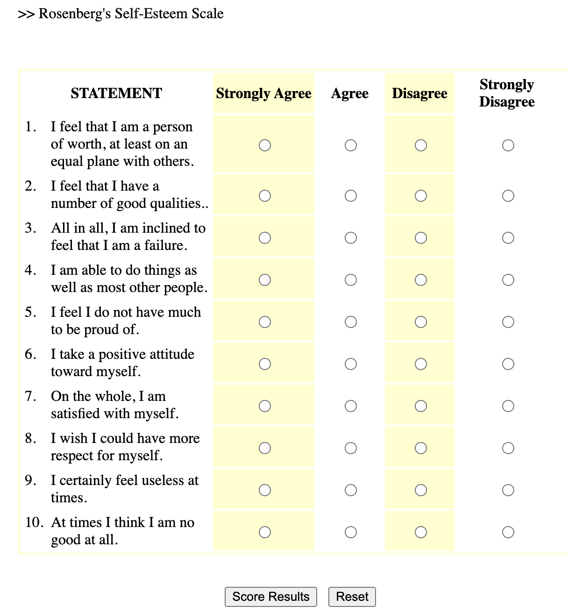

ec <- read.csv("../datasets/ec_data.csv") # Note: make sure to change the *path* in the `read.csv()` function to point R to the correct spot to import the ec dataset from YOUR computer.Good Measures
ImportantIn This Chapter
Learn how scientists evaluate the quality of data, and see how this was used to debunk phrenology as racist.
Learn about how (and why) a likert scale can be used to define continuous variation.
Learn how to create a likert scale in R.

PART 1 : Good Data : Validity and Reliability
Scientists evaluate the quality of their measures in terms of validity (“truth” or accuracy) and reliability (repeatability or precision). Learn more about these two concepts - and their specific forms - in the two videos below.
Validity and Its Specific Forms
Face Validity: asks us to evaluate whether our measure or result look like what it should look like. This is a superficial (and somewhat subjective) judgment. But it is often a powerful and quick way to assess. For example, if I measure my height and it tells me 100 feet, I know something is wrong because there is no way I’m that tall. Or, when looking at a self-esteem measure, I would want to see items that look like self-esteem questions (“I feel good about myself”.) If the self-esteem measure had other questions in it that didn’t really seem like they were measuring self-esteem (“I like to look at myself in the mirror”) I would have questions about the face-validity of the measure. This seems super obvious, but it’s an important check - do the measures used actually look like what they should?
Convergent validity: asks us to evaluate whether our measure similar to related concepts. When two things converge, they come together, and we want our measure to be similar to things that it should be similar to. For example, a measure of body height should be related to a measure of shoe size or tibia length. A measure of self-esteem should be similar to a measure of self-efficacy or satisfaction with life, since both are about how the person is subjectively seeing themselves. They shouldn’t be exactly the same thing, but we’d expect to see a pattern in the data. (We’ll talk more about how to quantify these patterns when we learn more about linear models.)
Discriminant validity: asks about whether our measure is different from unrelated concepts. When two things diverge, they are different from one another. And we WANT our measure to be different from things that we expect them to be different from. For example, a measure of height should be different from a measure of reading speed or how organized a person is. We would expect self-esteem to be different from how social a person is (though maybe there’s some relationship since our society values sociability, and people who are social might get more positive messages from others, bolstering their self-esteem.) This is the hardest concept for students to get, but it’s a really important test of the validity of a measure. I not only want my measure to be related to concepts it should be related to, but also different from concepts it should be different from.
Reliability
Test-retest reliability: asks us to evaluate whether we get the same result if we take multiple measures separated by time. If I think of self-esteem as a stable trait, I should expect to see some similarity in a person’s self-esteem at one time point and then the next day. Of course, there will be some change - self-esteem (and other personality variables) can be influenced by the situation and environment. But they shouldn’t be radically different if we have a good measure of this core aspect of the self.
Inter-rater / Inter-judge reliability: asks us to evalute whether multiple observers (or tools) make similar measurements. If I have two rulers made by the same company, I would expect them to give me similar answers for how tall I am. Similarly, two different observers who are reliable should make similar jugments about a person’s self-esteem, or the number of interruptions they count. If our measure is not reliable, then we might get different answers from the different people (or tools) making the measurement.
Inter-item reliability: When we learned about likert scales, we learned about Cronbach’s Alpha - a method of assessing how much the different items in a likert scale were related to each other. This is a form of reliability - specific only to likert scales where we have different questions that are all measuring the same thing. If the scale is reliable, we expect to get similar answers across the different items. For example, someone who says “I feel good about myself” should also say “I feel that I have a number of good qualities.”
Example : Validity and Reliability
Think about a scale. How would you evaluate the validity (face, convergent, discriminant) and reliability (test-retest / interjudge) of a bathroom scale? Think about this on your own, then look over the video key / guide below.
TipExpand To See Answers
Watch the video below to go over some possible answers, or just look over the table.
| face : does our measure or result look like what it should look like? | high : I have a sense of what my weight should be (e.g, if it says 10 or 1000 i know either the units are wrong or scale is broken.) |
| convergent : is our measure similar to related concepts? | high : my weight according to the scale is (somewhat) related to how much I stress eat, how little I exercise, my parents’ weight, etc. |
| discriminant : is our measure different from unrelated concepts? | high : my weight is unrelated to intelligence, how much I love R, whether I wear sandals with or without socks, etc. |
| test-retest : do we get the same result if we take multiple measures? | high : If I step on the scale and get a number, I should be able to step off the scale, step on again, and get the same number. |
| interrater reliability : would another observer make the same measurements? | high : a different scale (same model and technology) should give me the same result as my scale. |
| inter-item reliability : would one item in the likert scale be related to others? | not relevant. a bathroom scale is not a likert scale. |
Bad Data : Phrenology in terms of Validity and Reliability
Watch the video below to review these terms, in the context of phrenology - an example of scientific racism.

Phrenology is no longer considered a valid or reliable science, yet its presence still lingers in psychology, and is often taught as history without reference to its racist origins and consequences1. And as we have (and will continue to discuss) there are still many ways in which racism (and sexism, classism, and ableism) occur and affect psychology (and other sciences too).
1 For examples, in the common Intro Psych textbook written by Myers & DeWall (2018)
For example, more modern intelligence testing is often criticized for prioritizing White European values and language in the way it assesses supposedly “objective” knowledge. In an important test of this claim, the psychologist Robert Williams (pictured to the right) designed an IQ test that was as reliable as the default IQ test, but was “biased” to prioritize and value Black culture.

As seen in the table, Black students scored higher on this IQ test than White students - a point he (and others) use to emphasize the inherent biases in intelligence testing. Dr. Williams also came to define the concept of Ebonics, and demonstrate that African American English is as much a complete language as “Standard” English.

Check-In : Reliability and Validity.
Test your understanding of reliability and validity with the check-in above.
Below is a video to review the check-in answers, since these terms can be tricky :)
Would You Like to Learn More? (Optional Readings)
Here’s a textbook chapter on the same topics. Note these authors use three terms to describe what I broadly call “convergent validity”. Internal consistency (a form of reliability) is measured with “alpha reliability” (we will learn about this next week).
Dr. Williams talks about his research here and here’s an episode of the TV show Good Times that Dr. Williams consulted on. Here’s a link to his full study. Note that Dr. Williams gave his intelligence test a name I don’t feel comfortable using because it is sexist :(. Times change, and it’s good to call out outdated language and update our terms accordingly :)
Learn more about the racist history of how phrenology was produced and consumed and an article that conducted more recent researchto test phrenology’s theories.
Part 2 : Likert Scales
Definition & Theory
A likert scale is a common survey method psychologists use to measure continuous variation. Likert scales can be used for self-report surveys (where an individual answers questions about themselves), or given to observers (where an individual answers questions about another person - either someone they know, or someone they are actively observing). For example, to the right is an example likert scale - the Rosenberg Self-Esteem Scale2. Here’s a link to take the survey and get feedback.
2 Rosenberg, M. (1965). Rosenberg Self-Esteem Scale (RSES) [Database record]. APA PsycTests. Here’s a link to take the survey and get feedback.

Below are some common terms we will use when describing likert scale. (There’s a video that goes over these terms with another example below too.)
| Term | Definition | Usage / Example |
| Scale | The variable that you want to measure as a continuous variable. | Self-esteem is often measured with the Rosenberg Self-Esteem Scale (1965) |
| Item(s) | The specific question(s) in the scale. Each item measures some aspect of the variable the researcher is interested in. | The Rosenberg Self-Esteem Scale (RSE; 1965) is a ten item scale, which means it has ten questions about self-esteem. |
| Response Scale | How people answer the scale items. People give a number rating on a fixed range of options with labels. Many 5-point scales include the following labels (1 = Strongly Disagree; 2 = Disagree; 3 = Neutral; 4 = Agree; 5 = Strongly Agree.) | The RSE was originally written to use a 4-point rating scale from 0 (Strongly Disagree) to 3 (Strongly Agree). When Professor includes the RSE in his studies, he might change the response scale to go from 0-4 to so it has an odd-number of answers to allow people to say they are “neutral”. |
Positively- Keyed Item |
An item that measures the high end of the scale, where answering “yes” to the question means you are high on this variable. | “On the whole, I am satisfied with my life” is a positively-keyed item, because answering 4 (Strongly Agree) means the person says they are high in self-esteem. |
| Negatively-Keyed Item | An item that measures the low end of the scale, where answering “yes” to the question means you are low on the variable. | “I certainly feel useless at times” is a negatively-keyed item, because answering 4 (Strongly Agree) means the person says they are low in self-esteem. |
| Reverse Scoring | How researchers “flip” the negatively-keyed items to be positively-keyed. To calculate how to reverse-score an item, you can add the lower and upper limit of the full range. So to reverse-score a response scale that goes from 0 to 4 = 0 + 4 = subtract the negatively keyed items from 4. A response scale that goes from 1 to 15 = 1 + 15 = subtract the negatively keyed items from 16. And so on. This is confusing. We will practice in lecture some more, okay? |
To reverse score the negatively-keyed item, you would subtract the person’s 4 from 4 (since the scale range is 0 to 4, so 0+4 = 4). A response of 4 (Strongly Agree) to the question I certainly feel useless at times means that for this question, the person’s self-esteem would be rated as a 0. POP QUIZ : a survey has a response scale that goes from 1-7. What number would you subtract from in order to reverse score a negatively-keyed item?3 |
3 You would subtract from 8, since 1+7 = 8. So a 7 for a negatively-keyed item on the 1-7 scale would be turned into a 1, since 8-7 = 1
Advantages of Likert Scales
They are easy to administer as a self-report or observational survey, and provide structured data.
The principle of aggregation describes a phenomenon where combining multiple items into one scale will provide a more reliable and continuous measure. Remember, the normal distribution is a theoretical distribution that exists when there are multiple explanations for one variable that occur randomly in a population. The multiple items in a scale are one way to try and measure the multiple random explanations for variation. And indeed, as you’ll see in the R demonstration, when you combine multiple categorical items into one variable, the distribution of the variable looks more normal than any individual item.
Researchers can assess the reliability of the multiple items that were included in the measure. For example, if we are reliably measuring extraversion, then there should be. Cronbach’s (alpha) is a statistic that estimates the internal consistency (reliability) of a scale, and is based on (a) the similarity of people’s responses to the items in a scale (the more similar, the higher the reliability) and (b) the number of items in a scale (sales with many items will tend to have higher cronbach than will likert scales with just a few items.) There’s no official “rule” for what’s considered good or bad alpha, but below are some guidelines:
α > .8 = GREAT! Your scale is reliable
α = .5 - .7 = OKAY! Your scale has low reliability, so something may be wrong with your measure.
α < .5 = UH OH…your scale has really low reliability. Below are a few possible reasons:
your scale only has a few items: remember, that α is influenced by the number of items in your scale; so scales with a few items will almost certainly have a low alpha reliability.
were the items in scale incorrectly coded (reverse scored items)?
is the scale measuring different things (no consistency)? It could be that your scale isn’t very precise, and is measuring different variables.
Video Example : The Extraversion Scale
Here’s another example of a likert scale - Extraversion items adapted from Big Five Inventory 2 (Soto & John, 2017).

Watch This Video.
Check-In
Part 3 : Creating a Likert Scale in R
I Like To Read!
In this demonstration, we’ll use the class dataset to create a scale to measure differences in EXTRAVERSION. To do this, we will need to complete the following steps:
1. Import and Check the Data.
First, we’ll need to load the data, and check to make sure it is imported correctly. You can access these data here - personality measures of extraversion (how social people say they are) and conscientiousness (how organized people say they are).
2. Create a data.frame that isolates the items in the scale.
Now, I’ll just create a smaller dataframe of the variables that I want to work with for the extraversion scale. From the codebook, I see that the extraversion scale is made up of the items e1-e6r, with the r indicating items that are negatively-keyed.
extra.df <- data.frame(ec$e1, ec$e2, ec$e3, # the three positively keyed items
ec$e4r, ec$e5r, ec$e6r) # the three negatively keyed items
head(extra.df) # this code checks my work and make sure my newly created dataframe in fact contain the positively and negatively keyed items ec.e1 ec.e2 ec.e3 ec.e4r ec.e5r ec.e6r
1 2 3 2 4 4 4
2 2 4 3 3 3 4
3 3 4 2 4 5 4
4 2 3 2 3 4 3
5 5 5 5 1 1 1
6 1 3 3 3 4 43. Correctly reverse-score the negatively-keyed items in the scale.
Now, I need to reverse-score the negatively keyed items. Since the scale ranged from 1 to 5, I need to subtract the negatively keyed items from 6 to reverse the scoring (so 6 - 1 = 5, and 6 - 5 = 1.)
Note that you can calculate how to reverse-score an item by adding the lower and upper limit of the full range. So to reverse-score a response scale that goes from 0 to 4 = 0 + 4 = subtract the negatively keyed items from 4. A response scale that goes from 1 to 15 = 1 + 15 = subtract the negatively keyed items from 16. And so on.
I can again use the head() function to check my work and confirm that I successfully reverse scored the variables. Note that you can reverse-score the variables in one step; I don’t really do this twice when creating a scale :)
extra.df <- data.frame(ec$e1, ec$e2, ec$e3, # the three positively keyed items
6-ec$e4r, 6-ec$e5r, 6-ec$e6r) # the three negatively keyed items
head(extra.df) # this code checks my work and make sure my newly created dataframe in fact contain the positively and negatively keyed items. Note that there seems to be more consistency in the scores for each individual - people who are low in e1-e3 are now also low in e4r - e6r. ec.e1 ec.e2 ec.e3 X6...ec.e4r X6...ec.e5r X6...ec.e6r
1 2 3 2 2 2 2
2 2 4 3 3 3 2
3 3 4 2 2 1 2
4 2 3 2 3 2 3
5 5 5 5 5 5 5
6 1 3 3 3 2 24. Evaluate the reliability of the items in this variable.
I’ll examine the internal reliability of the scale. Internal reliability measures how consistent people’s responses were for each of the items of the scale. I’m hoping for a high value.
library(psych) # make sure you install.packages("psych") first!
alpha(extra.df)
Reliability analysis
Call: alpha(x = extra.df)
raw_alpha std.alpha G6(smc) average_r S/N ase mean sd median_r
0.87 0.87 0.88 0.52 6.6 0.03 3.1 0.88 0.49
95% confidence boundaries
lower alpha upper
Feldt 0.80 0.87 0.92
Duhachek 0.81 0.87 0.92
Reliability if an item is dropped:
raw_alpha std.alpha G6(smc) average_r S/N alpha se var.r med.r
ec.e1 0.88 0.88 0.89 0.59 7.2 0.028 0.017 0.58
ec.e2 0.85 0.85 0.85 0.53 5.6 0.035 0.029 0.51
ec.e3 0.82 0.82 0.83 0.48 4.6 0.040 0.025 0.45
X6...ec.e4r 0.85 0.85 0.86 0.53 5.7 0.035 0.032 0.51
X6...ec.e5r 0.80 0.81 0.81 0.46 4.3 0.044 0.020 0.46
X6...ec.e6r 0.86 0.86 0.86 0.55 6.1 0.032 0.020 0.53
Item statistics
n raw.r std.r r.cor r.drop mean sd
ec.e1 50 0.63 0.63 0.52 0.47 2.9 1.18
ec.e2 50 0.75 0.77 0.72 0.65 3.6 0.91
ec.e3 50 0.87 0.88 0.87 0.79 3.3 1.12
X6...ec.e4r 49 0.77 0.76 0.69 0.64 3.3 1.22
X6...ec.e5r 49 0.91 0.91 0.92 0.86 3.0 1.16
X6...ec.e6r 50 0.73 0.72 0.67 0.59 2.7 1.21
Non missing response frequency for each item
1 2 3 4 5 miss
ec.e1 0.14 0.26 0.28 0.24 0.08 0.00
ec.e2 0.04 0.06 0.30 0.50 0.10 0.00
ec.e3 0.06 0.20 0.30 0.30 0.14 0.00
X6...ec.e4r 0.04 0.31 0.20 0.24 0.20 0.02
X6...ec.e5r 0.08 0.27 0.35 0.16 0.14 0.02
X6...ec.e6r 0.16 0.34 0.20 0.22 0.08 0.00There’s a LOT going on in this code, but I’m looking at the number underneath raw_alpha, which shows me that this scale is reliable. This is good, and would be something that I would report when describing the measure of Extraversion.
The rest of the code output gives you other statistics on the scale (e.g., the mean or standard deviation), and shows you what the reliability of the scale would be if you removed one of the items from the scale. This can be useful for diagnosing whether there was an issue with your code (e.g., did you forget to reverse-score one item?) or with the scale (e.g., is one of your items actually measuring something other than extraversion?) In this case, the reliability doesn’t change much if we remove any of the items.
5. Use the rowmeans() function to create a new variable that is the average of each person’s items.
Now, I need to create one variable that is combines all the items into one number. To do this, I could either add up each person’s 6 extraversion scores, or take the average. The convention is usually to take the average for personality variables - not sure why…a cultural difference.
So we will use the rowMeans() function to do this. There are two methods for this.
- Method #1 (Default - very conservative approach) : only calculate an average score if people answered every item in the dataset. This completely removes a person from the dataset, even if they answered 5/6 of the questions.
this calculates the average of these items for each row (individual) in the dataset. This is the measure of extraversion for each person. Notice that there is some missing data - the default for this code is that a person’s data will be totally removed if they didn’t answer all the questions in the scale. This is a very conservative way to handle missing data.
rowMeans(extra.df) [1] 2.166667 2.833333 2.333333 2.500000 5.000000 2.333333 3.333333 3.666667
[9] 2.833333 2.333333 2.000000 3.500000 4.166667 2.333333 4.500000 3.166667
[17] NA 3.666667 3.000000 3.666667 NA 3.500000 3.666667 4.000000
[25] 1.666667 4.833333 3.666667 3.833333 3.166667 3.000000 2.500000 2.833333
[33] 1.000000 2.833333 3.333333 3.000000 3.166667 2.166667 2.333333 3.166667
[41] 1.833333 3.000000 3.166667 4.333333 4.166667 3.500000 3.500000 2.166667
[49] 4.833333 1.666667- Method #2 (more liberal approach) : this removes missing data from specific items, so the average score will be calculated even if the person didn’t answer some of the items.
rowMeans(extra.df, na.rm = T) # adding na.rm = T as an argument. [1] 2.166667 2.833333 2.333333 2.500000 5.000000 2.333333 3.333333 3.666667
[9] 2.833333 2.333333 2.000000 3.500000 4.166667 2.333333 4.500000 3.166667
[17] 3.800000 3.666667 3.000000 3.666667 2.800000 3.500000 3.666667 4.000000
[25] 1.666667 4.833333 3.666667 3.833333 3.166667 3.000000 2.500000 2.833333
[33] 1.000000 2.833333 3.333333 3.000000 3.166667 2.166667 2.333333 3.166667
[41] 1.833333 3.000000 3.166667 4.333333 4.166667 3.500000 3.500000 2.166667
[49] 4.833333 1.666667- IMPORTANT In order to save the output as a variable, you will need to assign the output of rowMeans() to a new object, ideally one that is saved as part of the original dataset.
ec$EXTRAVERSION <- rowMeans(extra.df, na.rm = T) # this saves the scales to the dataset as a new object (which I'm calling EXTRAVERSION). I like to name variables that I create in ALL CAPS. Note that I've chosen to be less conservative in how I handle missing data.6. Graph this variable and interpret the graph (what do you learn)?
Okay, we have a scale! And this scale should measure continuous variation! Let’s graph it. I’m looking for a graph that ranges from 1 to 5 (since that was the limit of my response scale), and something that looks mostly normally distributed.
hist(ec$EXTRAVERSION, main = "", col = 'black', bor = 'white')
This looks good. When I look at this graph I see the following things:
the range of the scale goes from 1 to 5. This is good, because the response scale ranged from 1 to 5. An incorrect range would suggest that I made a mistake when analyzing the data.
the graph is mostly normally distributed. This is also good, and expected for a personality variable like Extraversion. If there was some extreme skew, I might again think that I made a mistake when creating the scale, or wonder if there was some non-random variable that was influencing students’ extraversion scores (for example, the entire cohort of students took an improv class during orientation).
there is some slight positive / right skew - there are a few students who are maxed out on extraversion. What’s up extraverts [waves furiously]. Not sure why that is, but some deviation from normality is always expected! Ooh, one theory is that this survey was given out at the end of a three-hour lecture, so maybe students who were more extraverted were more likely to stick around in a large classroom setting, and thus more likely to be included in the survey. This is an example of sampling bias.
I Like To Watch Videos : Creating a Likert Scale
- Here’s a link to the Rscript I used in the video
- NOTE : skip / ignore the stuff on using the scale in a model - realized that is leftover from when I used to talk about likert scales after linear models and prof has not gotten a chance to re-record the video…we will talk about linear models in a a few weeks. Let me know if you have ideas about how to improve the video for when I do re-record!
Likert Scale Quiz.
Note : Creating likert scales takes practice. So I went ahead and uploaded a video key for this quiz (as part of the quiz assignment). You should try to take the quiz on your own - good to have a little bit of struggle! - and use the video key as a guide to learn.